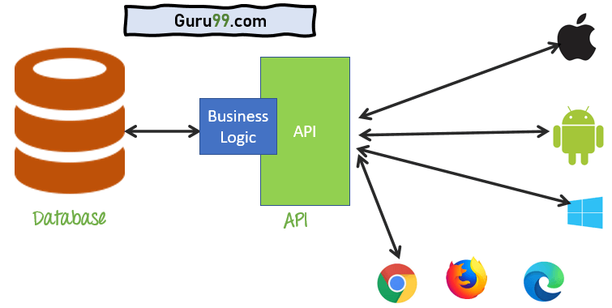
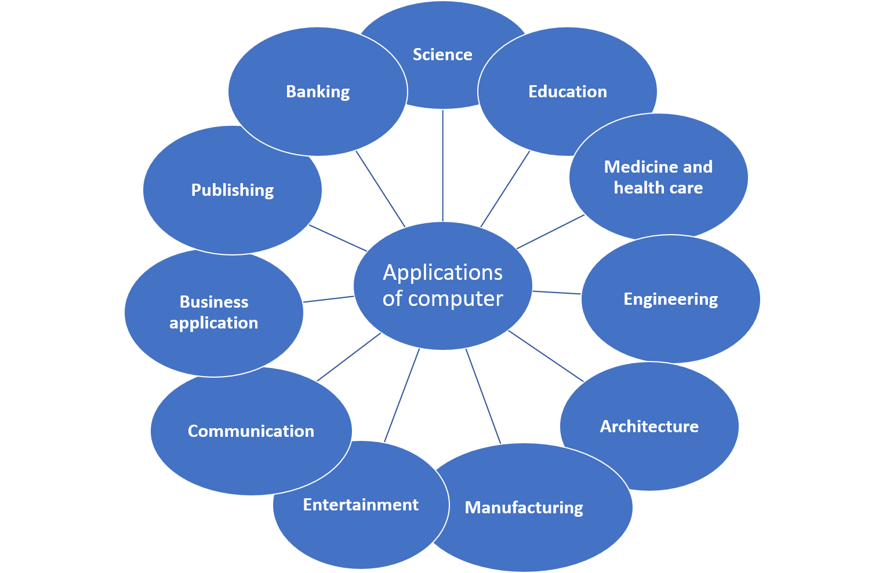
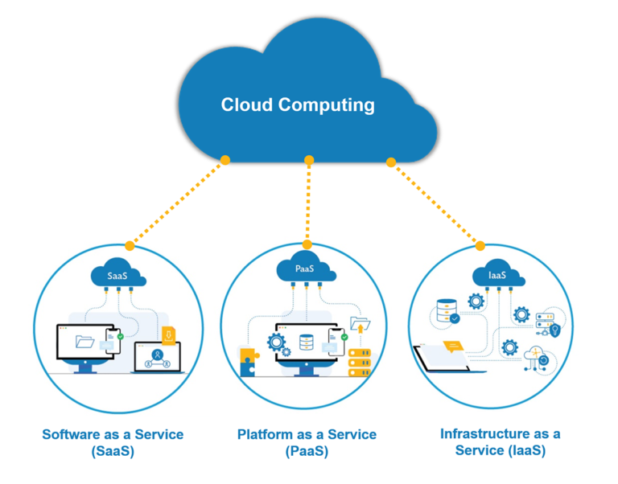
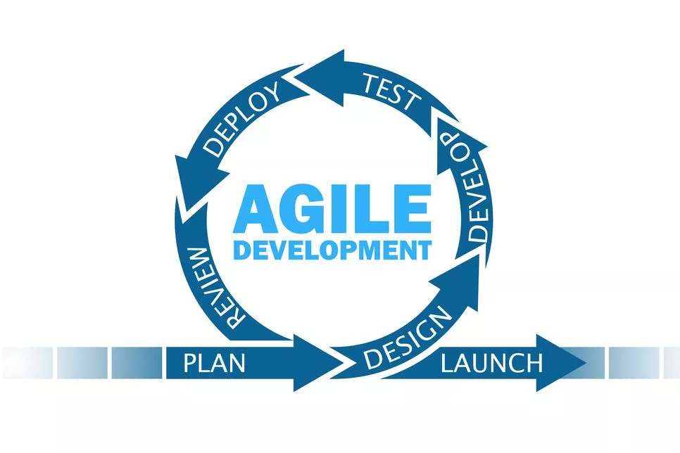
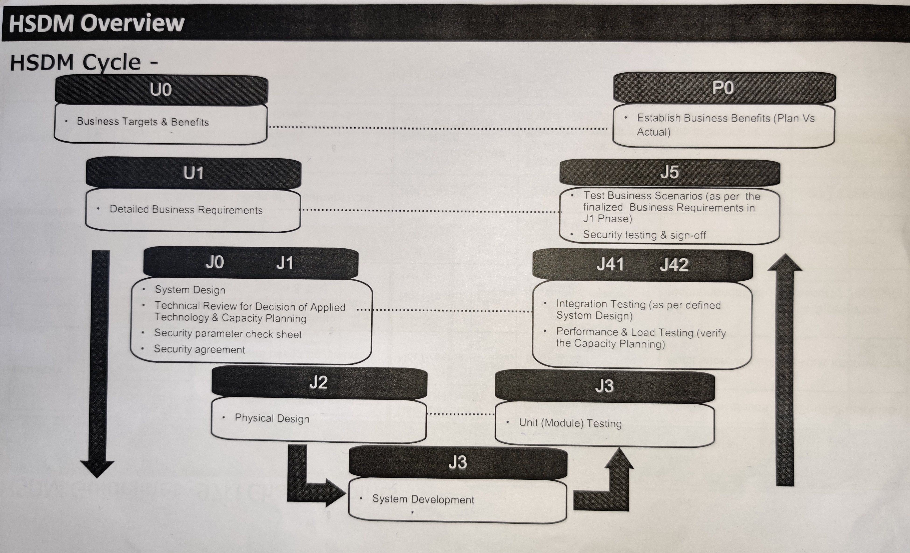

API→ API is the acronym for Application Programming Interface Application Programming
Interface, which is a software intermediary that allows two applications to talk to each other. Each time you
use an
app like
Facebook, send an
instant message, or check the weather on your phone, you’re using an API.
Example→ When you use an application on your mobile phone, the application connects to the Internet and sends data to a server. The server then retrieves that
data, interprets it, performs the necessary actions and sends it back to your phone. The application then interprets that data and presents you with the information you wanted in a readable way. This is what an API is - all of this happens
via API.

Types of API
There are 4 types of API.
1. Public API→
A public API is open and available for use by any outside developer or business. An enterprise that cultivates a business strategy
that involves sharing its applications and data with other
businesses will develop and offer a public API.Public APIs typically involve moderate authentication and authorization. An enterprise also may seek to monetize the API by imposing a per-call cost to utilize the public API.
2. Partner API→ A partner API, only available to specifically selected and authorized outside developers or API consumers, is a means to facilitate business-to-business
activities.
For
example, if a business wants to selectively share its customer data with outside CRM firms, a partner API can connect the internal customer data system with those external parties -- no other API use is permitted.
3. Internal API→
An internal (or private) API is intended only for use within the enterprise to connect systems and data within the business. For example, an internal API may connect an organization's payroll and HR systems.
Internal APIs traditionally present weak security and authentication -- or none at all -- because the APIs are intended for internal use, and such security levels are assumed to be in place through other policies.
4. Composit API→
Composite APIs generally combine two or more APIs to craft a sequence of related or interdependent operations. Composite APIs can be beneficial to address complex or tightly-related API behaviors, and can sometimes improve speed and
performance over individual APIs.
Web Page Security Parameters
1. Device Antivirus→
The devices that your business utilize to access the backend of your website can be a victim of cyber attack. It can certainly damage your website making it more accessible to hackers. Hence device safety networks or software should be
considered to protect your business computer systems and devices.
2. Network Security→
You can secure your company’s network by using encrypted Wifi, antimalware software or a strong firewall to help you monitor and secure your network. Additionally, the server software should be updated by the hosting company and they should
ensure to keep the security measures intact.
3. SaaS Security→
A website integrated with applications like CRM, lead generation tool or marketing automation systems should also have protective measures to safeguard these programs. The cloud-based software or software-as-a-service application can be
encrypted through cloud data protection software.
4. Password Security→
Passwords are the most vulnerable option for hackers to enter your site. Hence, having a password security manager helps protect your site against cyber attacks. Password managers help keep track of different passwords that you use to
access
your site and let you stay updated with any potential threats.
5. Outdated Plugins and Extensions→
The plugins or extensions used on your website should be updated because old versions can easily be hacked by hackers. Make sure that your web developers use only trusted plugins to avoid poor codes that may impact your website features and
functions.
Application→
An application, also referred to as an application program or application software, is a computer software package that performs a specific function directly for
an end user or, in some cases, for another application. An application can be
self-contained or a group of programs. The program is a set of operations that runs the application for the user.
Applications of Computer
1. Medical Field→
Computers are used in hospitals to maintain a database of patients’ history, diagnosis, X-rays, live monitoring of patients, etc. Surgeons nowadays use robotic surgical devices to perform delicate operations, and conduct surgeries remotely.
Virtual reality technologies are also used for training purposes. It also helps to monitor the fetus inside the mother’s womb.
2. Entertainment→
Computers help to watch movies online, play games online; act as a virtual entertainer in playing games, listening to music, etc. MIDI instruments greatly help people in the entertainment industry in recording music with artificial
instruments. Videos can be fed from computers to full screen televisions. Photo editors are available with fabulous features.
3. Industry→
Computers are used to perform several tasks in industries like managing inventory, designing purpose, creating virtual sample products, interior designing, video conferencing, etc. Online marketing has seen a great revolution in its ability
to sell various products to inaccessible corners like interior or rural areas. Stock markets have seen phenomenal participation from different levels of people through the use of computers.
4. Education→
Computers are used in education sector through online classes, online examinations, referring e-books, online tutoring, etc. They help in increased use of audio-visual aids in the education field.
5. Government→
In government sectors, computers are used in data processing, maintaining a database of citizens and supporting a paperless environment. The country’s defense organizations have greatly benefitted from computers in their use for missile
development, satellites, rocket launches, etc.
6. Banking→
In the banking sector, computers are used to store details of customers and conduct transactions, such as withdrawal and deposit of money through ATMs. Banks have reduced manual errors and expenses to a great extent through extensive use of
computers.
7. Business→
Nowadays, computers are totally integrated into business. The main objective of business is transaction processing, which involves transactions with suppliers, employees or customers. Computers can make these transactions easy and accurate.
People can analyze investments, sales, expenses, markets and other aspects of business using computers.
8. Training→
Many organizations use computer-based training to train their employees, to save money and improve performance. Video conferencing through computers allows saving of time and travelling costs by being able to connect people in various
locations.
9. Science and Engineering→
Computers with high performance are used to stimulate dynamic process in Science and Engineering. Supercomputers have numerous applications in area of Research and Development (R&D). Topographic images can be created through computers.
Scientists use computers to plot and analyze data to have a better understanding of earthquakes.

Cloud Technology
Cloud Technology→ Cloud computing technology gives users access to storage, files, software, and servers through their
internet-connected devices: computers, smartphones, tablets, and wearables. Cloud computing providers store and process data in a location that’s separate from end users.
Essentially, cloud computing means having the ability to store and access data and programs over the internet instead of on a hard drive. This means businesses of any
size can harness powerful software and IT infrastructure to
become bigger,
leaner, and more agile, as well as compete with much larger companies. Unlike with traditional hardware and software, cloud computing helps businesses stay at the forefront of technology without having to make large investments in
purchasing,
maintaining, and servicing equipment themselves.
Types of Cloud Computing
1. SaaS (Software as a Service)→ SaaS is a form of cloud computing in which users can access software applications
without needing
to download, install, or store that software
and its various
components on their devices or hard drive. Most cloud computing software of this kind is subscription-based with an annual or monthly fee. In return, users get seamless solutions and features without needing hardware, being bogged down by
installing updates, or other maintenance tasks.
2. PaaS (Platform as a Service)→ Platform as a Service (PaaS) is a cloud computing solution that provides developers
with an easy-to-use platform to create their own software, web applications, or other programming projects. Businesses use PaaS to create proprietary apps and programs without the need for servers or special testing environments.
2. IaaS (Infrastructure as a Service)→ Infrastructure as a Service (IaaS) provides companies with access
to servers,
firewalls, virtual machines, storage, and other infrastructure. It’s ideal for companies that create highly specialized or unique proprietary applications, but don’t want to spend time or other resources buying, storing, setting up, or
maintaining the necessary equipment. Instead, they access ready-to-use infrastructure over the internet.

Reasons to Companies prefer Cloud
1. Cost Savings→
If you are worried about the price tag that would come with making the switch to cloud computing, you aren't alone 20% of organisations are concerned about the initial cost of implementing a cloud-based server. But those who are attempting
to
weigh the advantages and disadvantages of using the cloud need to consider more factors than just initial price they need to consider ROI.
2. Security→
Many organisations have security concerns when it comes to adopting a cloud-computing solution. After all, when files, programs, and other data aren't kept securely onsite, how can you know that they are being protected? If you can remotely
access your data, then what's stopping a cybercriminal from doing the same thing? Well, quite a bit, actually.
3. Mobility→
Cloud computing allows mobile access to corporate data via smartphones and devices, which, considering over 2.6 billion smartphones are being used globally today, is a great way to ensure that no one is ever left out of the loop. Staff with
busy schedules, or who live a long way away from the corporate office, can use this feature to keep instantly up to date with clients and co-worker.
4. Disaster Recovery→
One of the factors that contributes to the success of a business is control. Unfortunately, no matter how in control your organisation may be when it comes to its own processes, there will always be things that are completely out of your
control, and in today's market, even a small amount of unproductive downtime can have a resoundingly negative effect. Downtime in your services leads to lost productivity, revenue, and brand reputation.
1. Agile Model→ It's hard to believe that the agile methodology officially turned 20 years old last year. What once was an outlying practice for startups
collaborating in colocated spaces with stickies and whiteboards is now a sophisticated, scalable, and widely used set of agile software development processes and tools.
There’s a rich history behind agile development and why organizations use agile methods such as scrum and kanban to modernize applications, improve customer experience, and implement digital transformations. There’s also a
tremendous body of knowledge around these methodologies and their intersections with design thinking, product management, and devops. Fewer people today ask, “What is agile? ” More are seeking guidance for how to align their teams on agile
best practices.
This article is a primer on agile methodologies, starting with people, teams, processes, and tools. You'll also learn how agile connects to devops, and about best practices that help organizations cultivate an agile
culture
and deliver better software.

Waterfall Model
1. Waterfall Model→ The waterfall model is a classical model used in system development life cycle to create a system with a linear and sequential approach.
It
is termed as waterfall because the model develops systematically from one phase to another in a downward fashion. This model is divided into different phases and the output of one phase is used as the input of the next phase. Every phase
has
to be completed before the next phase starts and there is no overlapping of the phases.
A (hybrid app) is a software application that combines elements of both native apps and web applications. Hybrid apps are essentially web apps that have been put in a native app shell. Once they are downloaded from an app store and
installed locally, the shell is able to connect to whatever capabilities the mobile platform provides through a browser that's embedded in the app. The browser and its plug-ins run on the back end and are invisible to the end user.
Hybrid apps are popular because they allow developers to write code for a mobile app once and still accommodate multiple platforms. Because hybrid apps add an extra layer between the source code and the target platform,
they may perform slightly slower than native or web versions of the same app.
Sales Process
HSDM (Honda System Development methodology)

1. A00→ Mission & Vision (Objective define).
2. U0→ High level requirements and benifits.
3. U1→ Detailed business requirements.
4. J0→ System Design and finalized partner as per the working efficiency tools (QCDM).
5. J1→ (FSD) Function Specifecation Documents.
6. J2→ Physical Design.
7. J3→ Unit testing done by partner.
8. J 4-1→ Integration testing.
9. J 4-2→ Load testing.
10. J5→ End user testing.
11. P0 → System benifits evalutation (Plan vs Actual).
Honda Principal
Maintainig global viewpoint to supply product of high quality at responsible price for customer satisfection.
Honda Philosophy
The Three Joy
1. The Joy of buying→ It is achieved by providing products and services that exceed needs and expectation of the customers.
2. The Joy of selling→ Is attained when those engages in selling and servicing Honda’s product develops relationships with the
customer based on mutual trust.
3. The Joy of creating→ It occurs when Honda’s associates and suppliers involved in the design, development, engineering and manufacturing of products
recognize a sense of joy in our customers using the product and dealers selling them.